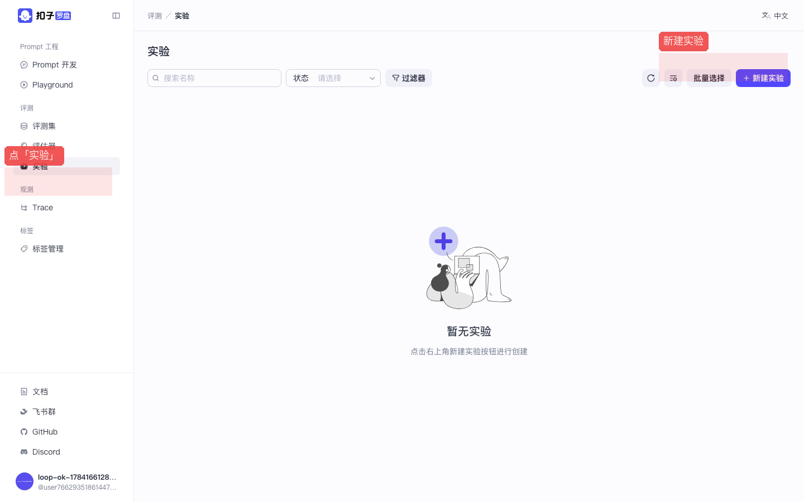
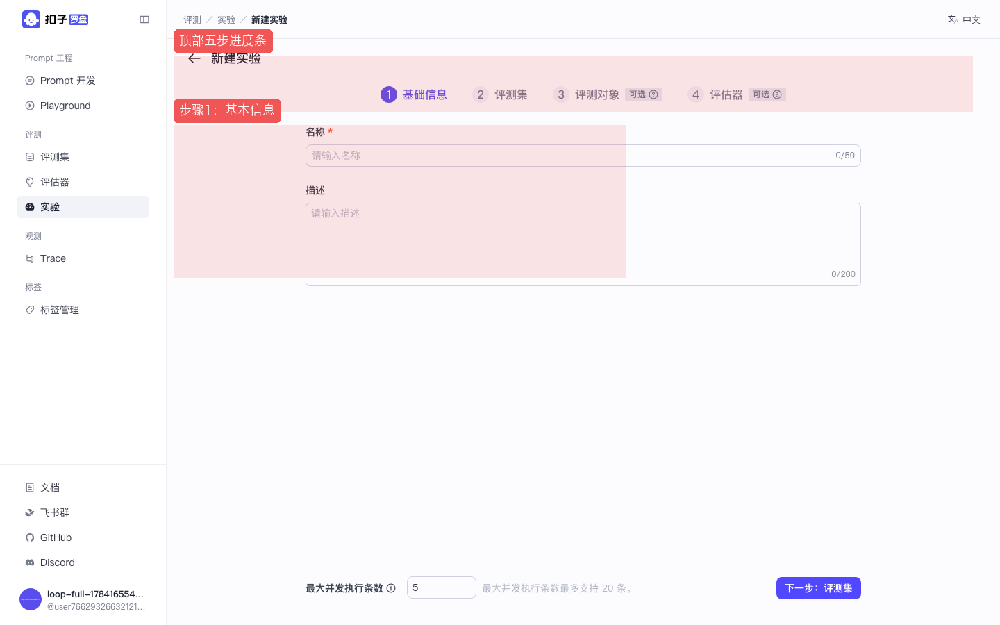
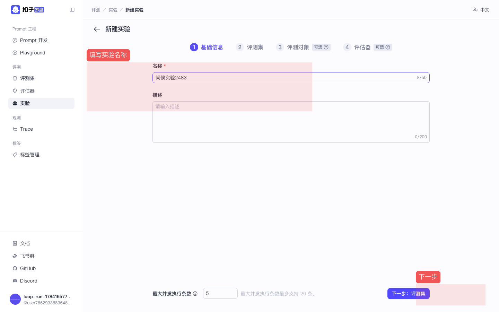
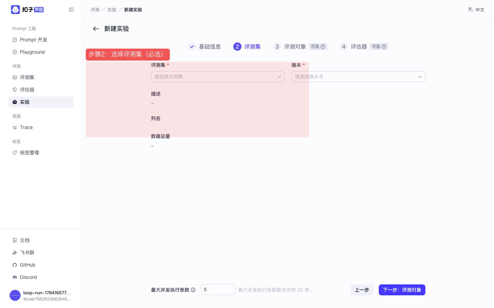
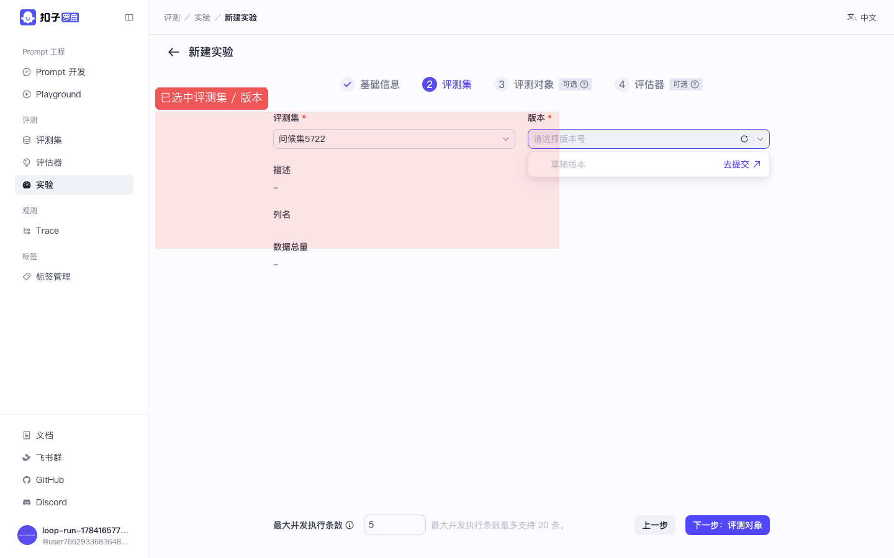
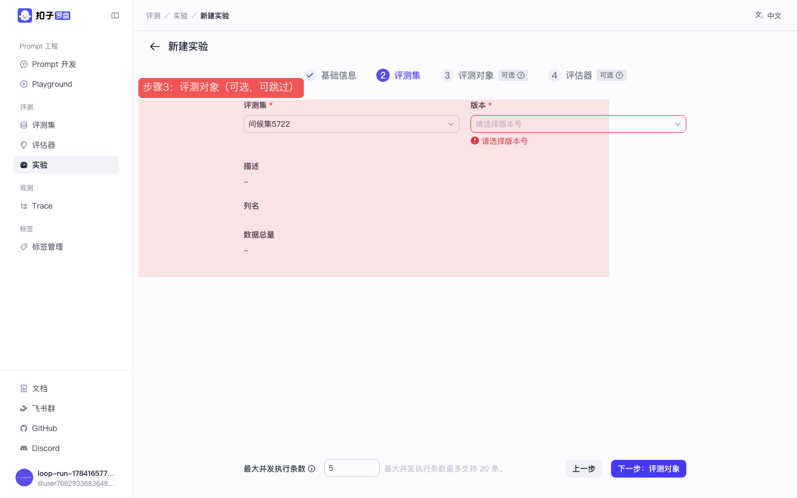
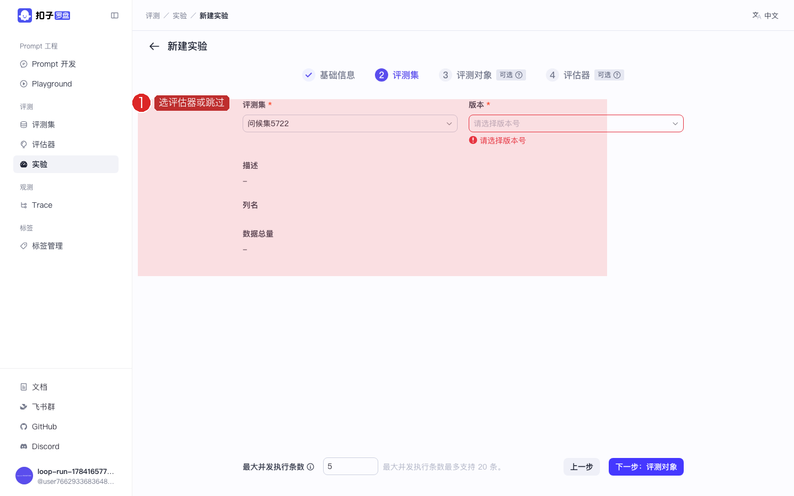
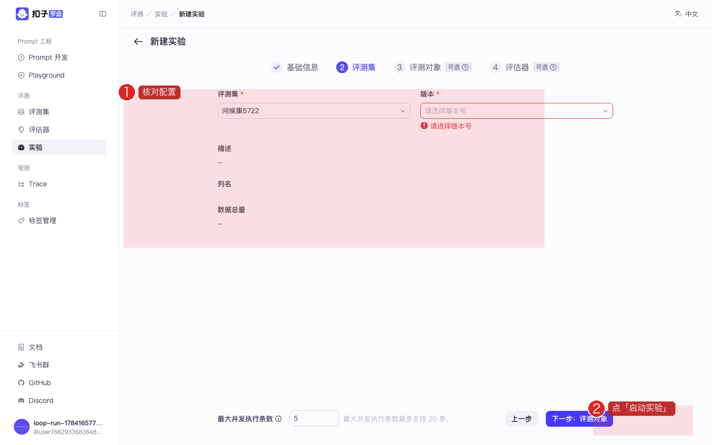

P04 · 实验：五步向导从创建到启动
跟着向导把「评测集 +（可选）Prompt +（可选）评估器」组装成一次实验。 截图红框为操作重点。上级：总目录。
🎯 本课目标（先读再动手）
- 理解实验 = 一次完整考试：评测集逐行跑对象，再用评估器打分。
- 走完五步向导：基本信息 → 评测集 → 对象 → 评估器 → 确认启动。
- 启动后能在列表/详情看到运行状态或行级结果。
打开实验并点新建
目的：进入「考试场」列表，并打开创建实验的五步向导。
作用：实验把前面的评测集、Prompt、评估器组装成一次可重复的批量评测任务。本步只负责进门并认识进度条。
- 侧栏点 实验
- 点右上角 新建 / 创建实验
- 进入五步向导页，先看顶部进度条

图：实验列表入口。

图：五步向导首页。红框标出进度条和第一步表单区。
步骤1：基本信息
目的：给这次实验起名，方便在列表里识别（谁跑的、测什么）。
作用：名称会出现在实验列表与详情标题。起名清晰（如「问候实验-Claude」）方便以后对比多次实验。
- 填写实验名称，例如
问候实验-Claude - 描述可选
- 点右下角 下一步

图：填名称后点「下一步」。
步骤2：选择评测集（必选）
目的：指定这次考试用哪张「试卷」（P02 建的评测集）。
作用：评测集是实验的必选项。选中后，系统会按该表的每一行去调用评测对象；空表或选错表会导致结果无意义。
- 在下拉 / 列表中选择你在 P02 创建的评测集
- 若有版本，选择最新版本
- 确认行数 > 0（空集会导致实验无意义）
- 点 下一步

图：步骤2 选择评测集。

图：选中后的状态。看不到评测集？回 P02 确认已创建成功。
步骤3～4：评测对象与评估器（可跳过）
目的：指定「谁来答题」（评测对象，如 Prompt）以及「谁来阅卷」（评估器）。
作用：选 Prompt 才会真正调用 Claude 生成输出；绑评估器才会自动打分。两者都可跳过以先跑通流程，但跳过则缺少对应能力（无模型输出或无自动分）。
- 步骤3 评测对象：选择 Prompt（P01 创建的），或按界面提示跳过
- 若选 Prompt，通常还要选版本
- 步骤4 评估器：勾选 P03 的评估器，或跳过
- 每步点 下一步

图：步骤3 评测对象。选 Prompt 才会真正调用 Claude。

图：步骤4 评估器。可多选；没有也可先进入确认页。
步骤5：确认并启动
目的：最后核对配置无误后，真正提交并启动这次批量评测任务。
作用：启动后平台按行执行：调对象 →（可选）评估 → 写结果。你可在详情看每行输出与汇总图表；这是「评测闭环」的终点。
- 核对：名称、评测集、对象、评估器
- 点 启动实验 / 创建 / 提交（按钮文案因版本可能不同）
- 等待任务从「运行中」变为完成
- 进实验详情：表格看每行输出；Chart 看汇总

图：最后确认页。点启动后去喝口水，行数多会跑一会儿。